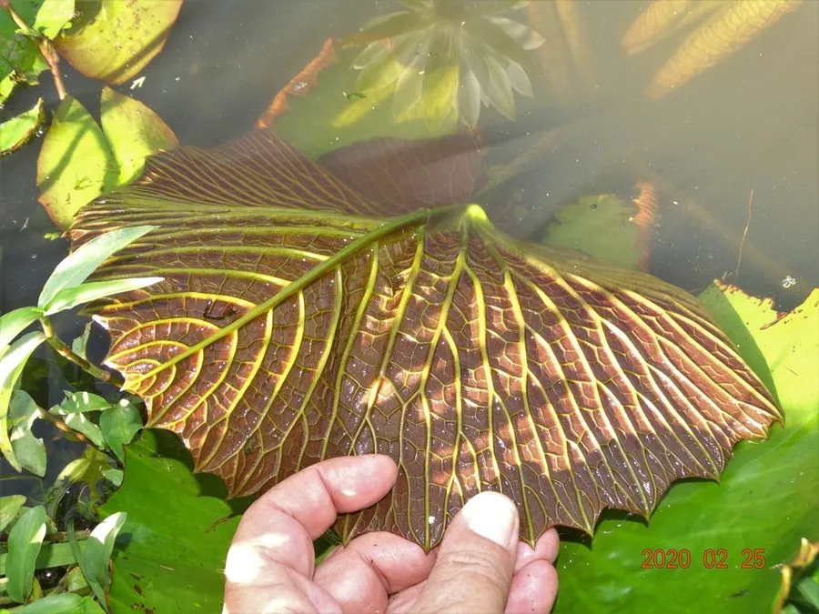

水生植物 · 植物界
齿叶睡莲 Nymphaea lotus

睡莲科睡莲属多年生水生草本，叶缘具明显齿状缺刻，花白色、花瓣尖，是原产非洲与东南亚的野生睡莲。
- 分类
- 门被子植物门纲木兰纲目睡莲目科睡莲科属睡莲属
- 栖息环境
- 非洲与东南亚的池塘、沼泽与缓流河湾，喜高温、阳光充足
- 地理分布
- 原产非洲热带与东南亚；中国华南、西南有引种栽培
- 保护级别
- IUCN 暂无评估；野生种群受湿地开垦与水体污染影响
物种志
齿叶睡莲为多年生水生草本，具粗壮根状茎。叶片浮水或稍挺出，近圆形，直径 20–40 厘米，叶缘具明显的齿状缺刻，上面深绿色，下面带紫红色。花单生，白色，直径 15–25 厘米，花瓣先端尖，花蕊黄色，挺出水面；浆果海绵质，种子沉水。
本种原产非洲热带与东南亚，生于池塘、沼泽与缓流河湾，喜高温、阳光充足的环境。它与古埃及文化关系密切，壁画中常见的睡莲很可能就是本种；如今在华南与西南的水景园中也有栽培。齿叶睡莲的叶缘齿状缺刻是识别它的关键特征，与叶缘平滑的白睡莲不同。栽培时需保持 30–80 厘米水深，并给予充足光照。
形态与习性
- 花期6–10 月，花白色、花瓣尖
- 叶浮水，叶缘具明显齿状缺刻
- 水深30–80 厘米的静水或缓流水体
- 光照强阳性，需充足直射光
- 水分生于静水，忌流水冲刷
- 土壤富含腐殖质的塘泥
- 主要用途水景观赏、湿地造景与文化展示
趣味知识
- 齿叶睡莲的叶缘有明显齿状缺刻，是区别于白睡莲的重要特征。
- 古埃及壁画中的睡莲很可能就是本种，它曾是尼罗河畔的常见植物。
- 它的花挺出水面，花瓣先端尖锐，与圆润的白睡莲花形不同。
- 齿叶睡莲在夜间也会开放，是少数夜开型睡莲之一。